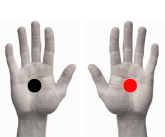

Técnicas Bansal
Pares
1. palma - palma
2. planta - planta
3. palma (der) - planta (der)
4. palma (izq) - planta (izq)
5. palma (der) - planta (izq)
5. palma (izq) - planta (der)

Generalidades:
Las Técnicas Bansal forman parte de la magnetoterapia, por lo que no están dentro de los protocolos del par biomagnético. El terapeuta las puede aplicar bajo su propio criterio y experiencia. E Dr. H. L. Bansal fué el pionero de la magnetoterapia en la India y el creador de éstas técnicas
1. La aplicación del par negativo en la mano derecha y positivo en la izquierda sirve para equilibrar la energía de la parte superior del cuerpo (del ombligo hacia arriba), por lo cual puede ayudar para el tratamiento de cualquier dolencia o trastrono en esta zona del cuerpo, como dolores de cabeza, trastornos del sistema respiratorio, etcétera.
2. Al colocar los imanes en las plantas de los pies se equilibra la energía de la parte inferior del cuerpo: bajo vientre, cadera, extremidades inferiores. Por lo que ayudará a los órganos o cualquier trastrono presente en esta zona: e.j.: infecciones en vías urinarias, calambres, mala circulación en las piernas, etcétera.
Si sólo se desea equilibrar un hemicuerpo, ya sea el derecho o izquierdo, se coloca el imán negativo en la mano y el positivo en el pie del mismo lado (homolateral).
3. Del lado derecho para afecciones en los órganos del hemicuerpo derecho como pueden ser trastronos del hígado.
4. Del lado izquierdo en caso de afecciones del hemicuerpo izquierdo como problemas del bazo o el páncreas.
Las técnicas 3 y 4 se pueden usar en caso que los síntomas de alguna enfermedad sean lateralizados como puede ser el caso de hemiplejias, poliomielitis, afecciones del sistema nervioso periférico...
5. El par cruzado: palma (der) negativo - planta (izq) positivo o invertido, sirve para equilibrar todo el organismo, efecto tonificante y reductor del estrés. Útil para tratar trastonos del sistema digestivo.
Las Técnicas Bansal estimulan los ganglios del sistema linfático ayudando a la eliminación de toxinas. Aunque también se pueden entender como un medio de equilibrio del cuerpo energético a través de los chakras secundarios que se encuentran en las palmas y plantas de los pies. Se pueden complementar las técnicas anteriores colocando un imán negativo en el entrecejo.
Se recomienda llevar a cabo este tratamiento dos o tres veces por semana. El tiempo de aplicación puede variar, desde 10 hasta 30 minutos.
Las técnicas del Dr. Bansal no sustituyen el rastreo completo del par biomagnético